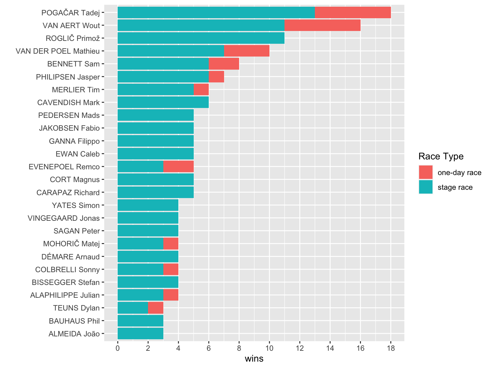
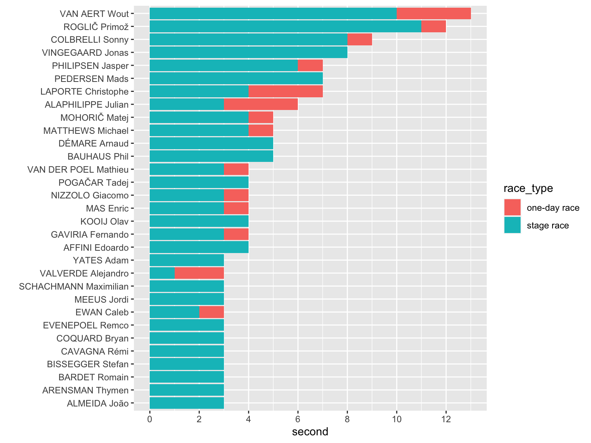
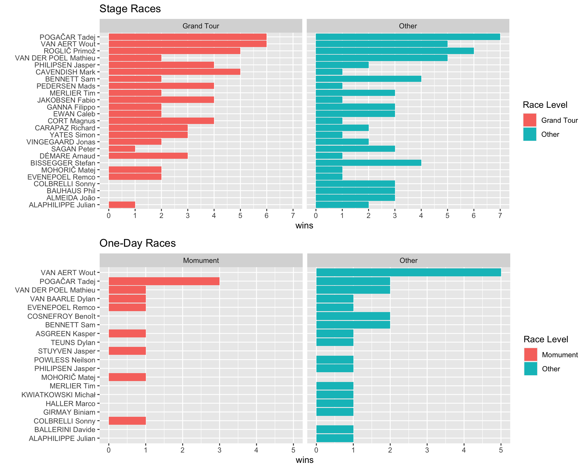

library(tidyverse)
library(rvest)
library(magrittr)
library(data.table)
library(polite)
library(xml2)
library(glue)
library(tictoc)
library(janitor)
library(lubridate)
library(Hmisc)
race_results_df <- readRDS("race_results_df") %>%
filter(year > 2020)test
The goal here is to scrape the procyclingstats site for results data. Results can be scraped for any race level and any year provided by the site.
This uses the polite package to assist in the scrape. As per the website:
“The goal of polite is to promote responsible web etiquette. The package’s two main functions bow and scrape define and realize a web harvesting session. bow is used to introduce the client to the host and ask for permission to scrape (by inquiring against the host’s robots.txt file), while scrape is the main function for retrieving data from the remote server.
The three pillars of a polite session are seeking permission, taking slowly and never asking twice.”
This does mean the scrapes are slow by design. For a worked example see: https://github.com/dmi3kno/polite
Step 1: Get a list of races you want to scrape
This section takes the years you want to scrape and the circuit, and generates a dataframe with the name of the race, the year and the link for the race.
Select the circuit:
- Men’s World Tour
- Men’s World Championships
- Men’s Junior
- Women’s Elite
- Women’s Junior
- Women’s World Tour
- Europe Tour
- Africa Tour
- Asia Tour
- Oceania Tour
- American Tour
- UCI Pro Series
- National Cup
Now we have the results, need to have a look at it. Who had the most wins for the the period?
race_results_df %>%
filter(rnk == 1,
year > 2020) %>%
group_by(rider, race_type) %>%
summarise(wins = n()) %>%
group_by(rider) %>%
mutate(total_wins = sum(wins)) %>%
filter(total_wins > 2) %>%
ggplot(aes(x = reorder(rider, total_wins), y = wins, fill = race_type)) +
geom_bar(stat = "identity") +
coord_flip() +
scale_y_continuous(breaks = c(0, 2, 4, 6, 8, 10, 12, 14, 16, 18, 20, 22, 24)) +
labs(x = "", fill = "Race Type")
Since the start of the 2021 season Pog has won the most races/stages with 18 followed closely by Van Aert with 16 and Roglic at 11. Does not include overall GC wins. Limited to those with 3 or more wins.
What does it look like if we look at who had the most 2nd places?
race_results_df %>%
filter(rnk == 2, year > 2020) %>%
group_by(rider, race_type) %>%
summarise(second = n()) %>%
group_by(rider) %>%
mutate(total_seconds = sum(second)) %>%
filter(total_seconds > 2) %>%
ggplot(aes(x = reorder(rider, total_seconds), y = second, fill = race_type)) +
geom_bar(stat = "identity") +
coord_flip() +
scale_y_continuous(breaks = c(0, 2, 4, 6, 8, 10, 12, 14, 16, 18, 20, 22, 24)) +
labs(x = "")
Perhaps unsurprisingly, Van Aert had the most 2nd places with 13 followed closely by Roglic with 12.
Finally, if we highlight monuments and grand tours, who has the most ‘big’ wins. The following graph is ordered by the most total wins, but shows how many were from monuments or grand tours and how many were not.
one_day_race_wins <- race_results_df %>%
filter(race_type == "one-day race", rnk == 1, year > 2020) %>%
group_by(rider, race_level) %>%
summarise(wins = n()) %>%
group_by(rider) %>%
mutate(total_wins = sum(wins)) %>%
# filter(total_wins >2) %>%
ggplot(aes(x = reorder(rider, total_wins), y = wins, fill = race_level)) +
geom_col() +
coord_flip() +
facet_wrap(~race_level) +
scale_y_continuous(breaks = c(0:20)) +
labs(x = "", title = "One-Day Races", fill = "Race Level")
stage_race_wins <- race_results_df %>%
filter(race_type == "stage race", rnk == 1, year > 2020) %>%
group_by(rider, race_level) %>%
summarise(wins = n()) %>%
group_by(rider) %>%
mutate(total_wins = sum(wins)) %>%
filter(total_wins > 2) %>%
ggplot(aes(x = reorder(rider, total_wins), y = wins, fill = race_level)) +
geom_col() +
coord_flip() +
facet_wrap(~race_level) +
scale_y_continuous(breaks = c(0:20)) +
labs(x = "", title = "Stage Races", fill = "Race Level")
gridExtra::grid.arrange(stage_race_wins, one_day_race_wins)
Looking at One-day races, Van Aert and Pog won the same number (5 wins), but that does not tell the whole story - 3 of Pog’s 5 wins were Monuments while none of Van Aert’s wins were Monuments. For Stage races, looking at the sprinters, both Bennett and Cavendish had 6 wins, of those 5 of Cavendish’s were at Grand Tours while Bennett only had 2 Grand Tour stage wins.
There is a lot more to do in regards to analysis, this document has focused on the data scrape. With that achieved, future posts will be more in-depth analysis of this data.
Hmisc::describe(race_results_df)race_results_df
31 Variables 45638 Observations
--------------------------------------------------------------------------------
race
n missing distinct
45638 0 32
lowest : amstel-gold-race benelux-tour bretagne-classic cyclassics-hamburg dauphine
highest: tour-de-romandie tour-de-suisse uae-tour volta-a-catalunya vuelta-a-espana
--------------------------------------------------------------------------------
year
n missing distinct
45638 0 2
Value 2021 2022
Frequency 23680 21958
Proportion 0.519 0.481
--------------------------------------------------------------------------------
stage
n missing distinct
39799 5839 21
lowest : 1 10 11 12 13, highest: 5 6 7 8 9
--------------------------------------------------------------------------------
race_type
n missing distinct
45638 0 2
Value one-day race stage race
Frequency 5839 39799
Proportion 0.128 0.872
--------------------------------------------------------------------------------
date
n missing distinct Info Mean Gmd .05
45638 0 255 1 2021-11-25 217.2 2021-03-11
.10 .25 .50 .75 .90 .95
2021-03-25 2021-05-30 2021-09-04 2022-05-25 2022-08-01 2022-08-28
lowest : 2021-02-21 2021-02-22 2021-02-23 2021-02-24 2021-02-25
highest: 2022-09-08 2022-09-09 2022-09-10 2022-09-11 2022-10-08
--------------------------------------------------------------------------------
start_time
n missing distinct
45638 0 133
lowest : 10:00 10:05 10:10 10:15 10:15 (11:15 CET)
highest: 16:30 16:45 17:02 17:26 17:44
--------------------------------------------------------------------------------
rider
n missing distinct
45638 0 1027
lowest : AASVOLD Kristian ABERASTURI Jon ABRAHAMSEN Jonas ACKERMANN Pascal ADRIÀ Roger
highest: ZINGLE Axel ZOCCARATO Samuele ZUKOWSKY Nickolas ZURITA Ricardo Alejandro ZWIEHOFF Ben
--------------------------------------------------------------------------------
age
n missing distinct Info Mean Gmd .05 .10
45638 0 25 0.996 28.23 5.095 22 23
.25 .50 .75 .90 .95
25 28 31 35 36
lowest : 18 19 20 21 22, highest: 38 39 40 41 42
--------------------------------------------------------------------------------
bib
n missing distinct Info Mean Gmd .05 .10
45638 0 200 1 112.9 76.53 11 22
.25 .50 .75 .90 .95
55 113 171 204 216
lowest : 1 2 3 4 5, highest: 244 245 246 247 248
--------------------------------------------------------------------------------
team
n missing distinct
45638 0 55
lowest : AG2R Citroën Team Alpecin-Deceuninck Alpecin-Fenix Androni Giocattoli - Sidermec Astana - Premier Tech
highest: TotalEnergies Trek - Segafredo UAE Team Emirates Uno-X Pro Cycling Team Vini Zabù
--------------------------------------------------------------------------------
rnk
n missing distinct Info Mean Gmd .05 .10
42884 2754 184 1 75.64 52.05 8 15
.25 .50 .75 .90 .95
37 74 112 138 151
lowest : 1 2 3 4 5, highest: 180 181 182 183 184
--------------------------------------------------------------------------------
uci
n missing distinct Info Mean Gmd .05 .10
3123 42515 48 0.994 41.22 54.28 3 4
.25 .50 .75 .90 .95
8 16 40 100 175
lowest : 1 2 3 4 5, highest: 300 320 325 400 500
--------------------------------------------------------------------------------
pnt
n missing distinct Info Mean Gmd .05 .10
7308 38330 45 0.922 16.59 20.04 2 3
.25 .50 .75 .90 .95
5 5 17 46 70
lowest : 1 2 3 4 5, highest: 120 150 200 225 275
--------------------------------------------------------------------------------
gc
n missing distinct Info Mean Gmd .05 .10
38780 6858 184 1 77.19 52.64 8 16
.25 .50 .75 .90 .95
38 76 114 140 152
lowest : 1 2 3 4 5, highest: 180 181 182 183 184
--------------------------------------------------------------------------------
time
n missing distinct
45638 0 2641
lowest : - -1″ -2″ -3″ 0:000:00
highest: 9:559:55 9:569:56 9:579:57 9:589:58 9:599:59
--------------------------------------------------------------------------------
bonus_secs
n missing distinct Info Mean Gmd .05 .10
1210 44428 20 0.979 5.058 3.754 1 1
.25 .50 .75 .90 .95
2 4 6 10 11
lowest : 1 2 3 4 5, highest: 16 18 19 20 22
Value 1 2 3 4 5 6 7 8 9 10 11
Frequency 160 169 150 209 26 219 22 11 13 166 11
Proportion 0.132 0.140 0.124 0.173 0.021 0.181 0.018 0.009 0.011 0.137 0.009
Value 12 13 14 15 16 18 19 20 22
Frequency 16 23 3 1 1 6 2 1 1
Proportion 0.013 0.019 0.002 0.001 0.001 0.005 0.002 0.001 0.001
--------------------------------------------------------------------------------
timelag
n missing distinct Info Mean Gmd .05 .10
28517 17121 3448 1 910.4 1035 11 29
.25 .50 .75 .90 .95
92 541 1484 2512 2969
lowest : 0 1 2 3 4, highest: 3594 3595 3596 3597 3599
--------------------------------------------------------------------------------
avg_km_h
n missing distinct Info Mean Gmd .05 .10
4453 41185 2692 1 45.57 5.923 34.62 39.20
.25 .50 .75 .90 .95
43.05 46.45 49.36 51.43 52.68
lowest : 22.275 22.755 22.764 23.003 23.012, highest: 56.807 56.912 57.333 57.654 58.748
--------------------------------------------------------------------------------
avg_speed_winner
n missing distinct
45638 0 289
lowest : 28.23 km/h 32.413 km/h 32.596 km/h 33.534 km/h 34.219 km/h
highest: 54.89 km/h 55.575 km/h 55.676 km/h 55.98 km/h 58.748 km/h
--------------------------------------------------------------------------------
race_category
n missing distinct value
45638 0 1 ME - Men Elite
Value ME - Men Elite
Frequency 45638
Proportion 1
--------------------------------------------------------------------------------
distance
n missing distinct
45638 0 242
lowest : 10.1 km 10.9 km 108.4 km 11.1 km 11.8 km
highest: 8.6 km 9 km 9.2 km 92.7 km 96.7 km
--------------------------------------------------------------------------------
points_scale
n missing distinct
45638 0 5
lowest : 1.WT.A 1.WT.B 2.WT.Stage GT.A.Stage GT.B.Stage
highest: 1.WT.A 1.WT.B 2.WT.Stage GT.A.Stage GT.B.Stage
Value 1.WT.A 1.WT.B 2.WT.Stage GT.A.Stage GT.B.Stage
Frequency 1726 4113 19327 6794 13678
Proportion 0.038 0.090 0.423 0.149 0.300
--------------------------------------------------------------------------------
uci_scale
n missing distinct
45638 0 8
lowest : UCI.WR.C1 UCI.WR.C1.Stage - TM2022 UCI.WR.C2 UCI.WR.C2.Stage - TM2022 UCI.WR.C3
highest: UCI.WR.C2.Stage - TM2022 UCI.WR.C3 UCI.WR.C3.Stage - TM2022 UCI.WR.GT.A.Stage - TM2022 UCI.WR.GT.B.Stage - TM2022
--------------------------------------------------------------------------------
profile_score
n missing distinct
45638 0 185
lowest : 0 1 10 100 101, highest: 93 94 95 97 98
--------------------------------------------------------------------------------
vert_meters
n missing distinct
45638 0 277
lowest : 100 102 1032 1049 1057, highest: 926 94 96 966 977
--------------------------------------------------------------------------------
departure
n missing distinct
45638 0 260
lowest : 's-Hertogenbosch Aalter Abbiategrasso Aesch Aigle
highest: Ypres Zabrze Zalla Zamość Zamudio
--------------------------------------------------------------------------------
arrival
n missing distinct
45638 0 264
lowest : Abu Dhabi Breakwater Aesch Ajman Al Hudayriat Island Al Marjan Island
highest: Waregem Wevelgem Zamość Zamudio Zinal (Val d'Anniviers)
--------------------------------------------------------------------------------
race_ranking
n missing distinct
45638 0 31
lowest : 1 10 11 12 13, highest: 6 64 7 8 9
--------------------------------------------------------------------------------
startlist_quality_score
n missing distinct
45638 0 57
lowest : 1013 1019 1043 1061 1068, highest: 885 936 970 974 984
--------------------------------------------------------------------------------
won_how
n missing distinct
45638 0 85
lowest : ? km solo 0.2 km solo 0.3 km solo 0.4 km solo 0.5 km solo
highest: Other Sprint a deux Sprint of large group Sprint of small group Time Trial
--------------------------------------------------------------------------------
race_level
n missing distinct
45638 0 3
Value Grand Tour Momument Other
Frequency 20472 1726 23440
Proportion 0.449 0.038 0.514
--------------------------------------------------------------------------------